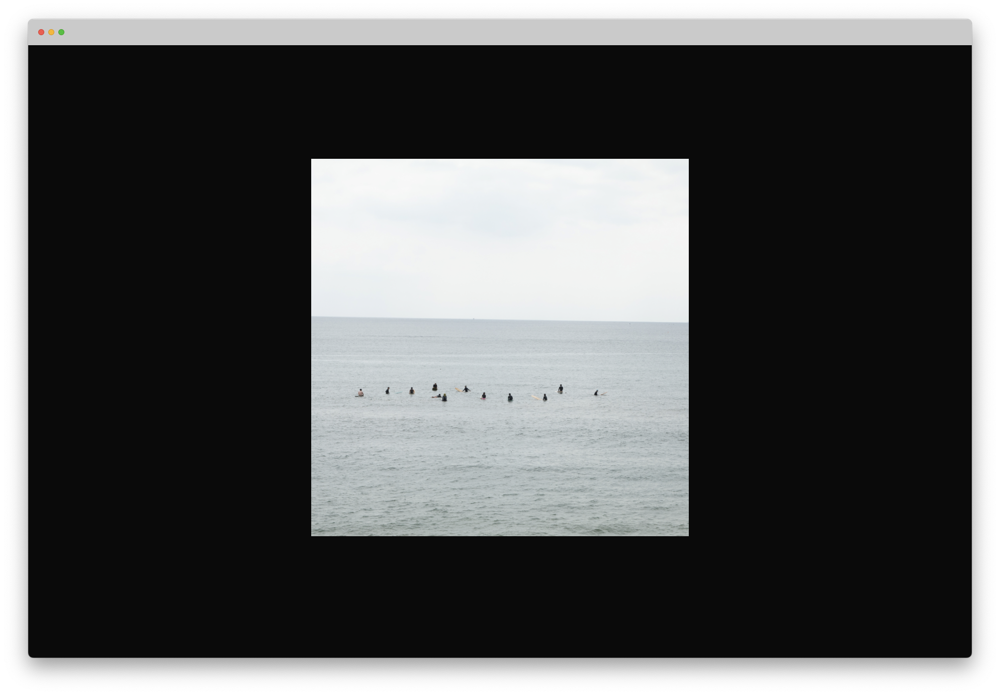
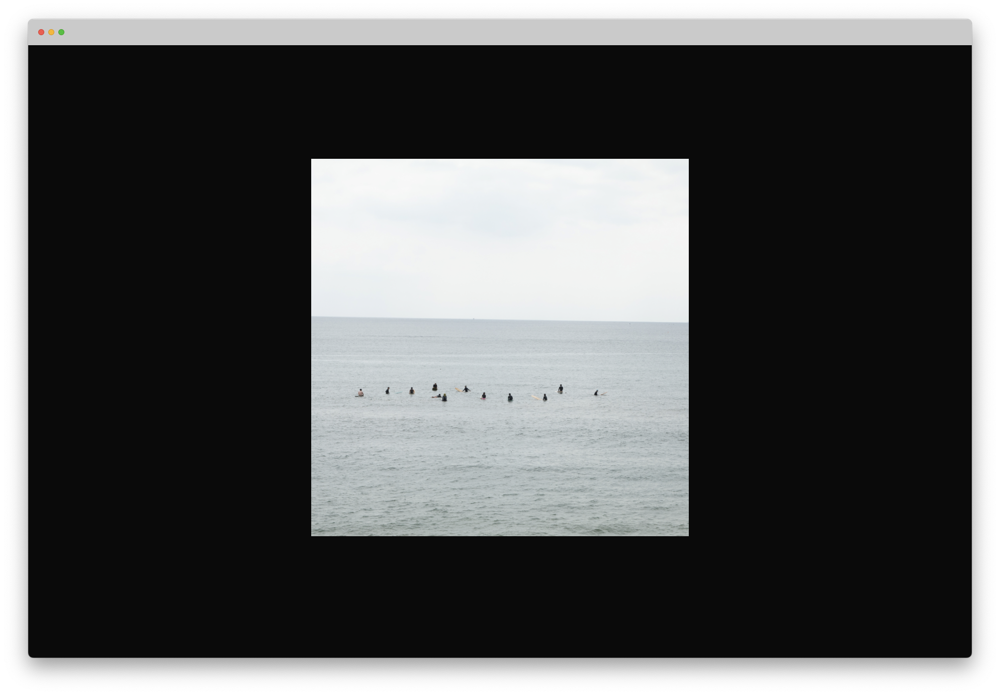
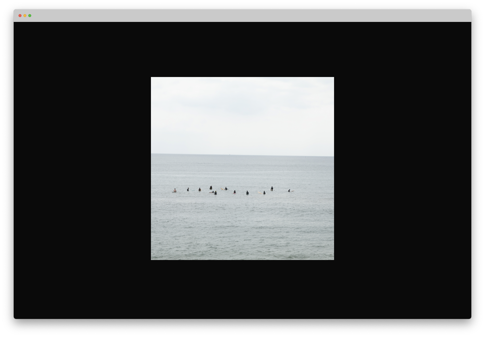

Kota Oebisu
 

この作品は、日記による記憶の再編成をテーマとしている。
2023年の3月末から、友人に勧められ日記を書くようになった。
日記とは、書き手である私自身が触れたその日を複製し、複製されたそれを言葉でなぞることで追体験することである。日記を書くとき、読み返されるとき、1度目の体験から出発しつつも、全く異なるものになることさえある。
この作品の制作の動機は、半年間書いてきた日記とこれまで続けてきた写真を撮ることを、日記に書かれないこと、写真に収められないものにおいて、その日に起こった状況をフレーミングすることでこぼれてしまう事物において、パラレルに捉えられるのではないかという直感から始まった。
さまざまな人物が映る極めて具体的な時間を持つスナップ写真と、海や空に代表されるどの時制からも外れてしまうような過去としての写真。それらがランダムに打ち返される関係性のあいだに、日付のない日記というキーワードのもと日記に記述されないものを捉えることを試みた。
可変
Visual Studio Code,
Adobe Lightroom, etc...
2023
web page
